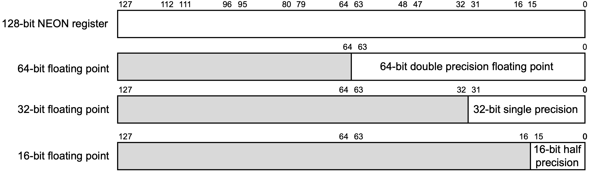

浮点数与SIMD
在本教程的最后，我们将介绍浮点数与SIMD。这一章的内容在平时的汇编语言开发、程序逆向过程中不怎么常见，但是也是不可或缺的一部分。
浮点数
在AArch64架构中，一般采用32个128位的SIMD与FP寄存器（这种寄存器的名字就叫做「SIMD与FP寄存器」（SIMD and FP register））来存储浮点数：

一般来说，在浮点数的处理过程中，我们常用的是其中的32位部分和64位部分，分别对应了C语言中的单精度浮点型float与双精度浮点型double。关于这两种类型的编码、特性，我们在底层的浮点数一章中已经介绍过了。
对32位浮点型寄存器的引用，可以使用s，64位则使用d。例如，s1代表第2个SIMD与FP寄存器的32位部分，d3代表第4个SIMD与FP寄存器的64位部分。除此之外，16位的浮点型寄存器可以使用h，128位的则可以使用q。
与整型类似，SIMD与FP寄存器之间也可以按照浮点数的运算法则进行算术运算，其对应的汇编指令只需要在前面加上f。例如：
fadd s1, s0, s2
意思就是将s0的值与s2相加，结果存储在s1中。
而相关的内存读写指令则与整型相同，都是直接ldr与str。例如：
ldr s1, [x0]
意思就是将x0寄存器存储的地址指向的32位值导入s1中。
关于SIMD与FP寄存器，除了我们日常会在浮点数的运算中使用到，还有一个非常常见的地方会用到，那就是大块儿内存的访问。以memcpy为例，我们知道，AArch64架构中，我们不能只使用一条语句实现从一个内存写入另一个内存中，而是需要使用ldr将源地址的值读入寄存器，再通过str将寄存器的值写入目的地址。但是，一个通用寄存器的大小最多只有64位，如果我们需要拷贝大块儿的内存，就需要执行多次这个读取-写入的指令序列。为了减小这种开销，我们可以使用SIMD与FP寄存器，因为其最大是128位。不仅如此，我们还可以使用之前介绍的stp、ldp指令，一次读写两块儿内存。例如：
ldp q0, q1, [x0]
stp q0, q1, [x1]
在Linux的glibc源码中的文件sysdeps/aarch64/multiarch/memcpy_advsimd.S里，我们就能看到类似的操作：
#define A_q q0
#define B_q q1
#define C_q q2
#define D_q q3
#define E_q q4
#define F_q q5
#define G_q q6
#define H_q q7
; ...
L(loop64):
stp A_q, B_q, [dst, 16]
ldp A_q, B_q, [src, 80]
stp C_q, D_q, [dst, 48]
ldp C_q, D_q, [src, 112]
add src, src, 64
add dst, dst, 64
subs count, count, 64
b.hi L(loop64)
SIMD
在我们日常编程的过程中，其实会遇到大量可以向量化并行化的模式。例如，对数组中的每个元素都进行同样的操作，或者图形学引擎、机器学习引擎中的大量矩阵运算。这种可以向量化的模式，一般而言，就是我们需要对多组数据进行同样的操作，而每组数据之间互不干扰。为了优化这种模式，许多的CPU架构都推出了SIMD指令。所谓的SIMD，就是指 Single Instruction Multiple data，也就是说，执行一条指令，可以操作多个数据（但速度快的同时，功耗也会显著上升）。
Apple在Apple Silicon中实际上有一个协处理器专门负责矩阵运算的优化，也研发了自己的指令集AMX2。但是，目前并没有任何官方的文档，也没有任何一款汇编器支持这个指令集。我们只能通过Accelerate框架调用这个协处理器。因此，我们并不会介绍这个指令集。
AArch64架构实际上也有自己的SIMD指令，其中一种被称为NEON。Apple Silicon也支持NEON。
所谓的NEON，实际上也是使用的这32个128位SIMD与FP寄存器。在NEON指令中，一个SIMD与FP寄存器会被看作多个「路」（Lane）：

一个SIMD与FP寄存器，可以看作2路64位，4路32位，8路16位，16路8位的寄存器。例如，对于4路32位来说，就是将这一个寄存器看作其同时存储了4个32位的数据。
我们在实际使用时，可以如下使用：
add.4h v0, v1, v2
上述指令中，v0、v1、v2分别指代第一、二、三个SIMD与FP寄存器，而.4h则是指将其看作4路16位寄存器，也就是说，只使用在上图中倒数第二行的0、1、2、3这四个部分。
最终的效果就是，将v1、v2中相应部分的4个值相加，结果存储到v0的相应部分中。
与.4h对应的，我们分别可以用b、h、s、d指代8位、16位、32位、64位的部分。我们可以使用.8b指代8路8位寄存器，.2s指代2路32位寄存器。